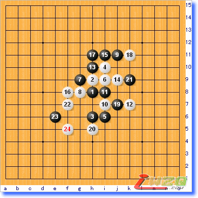
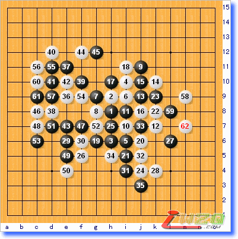
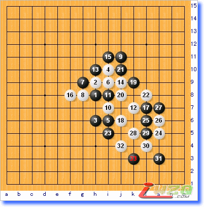
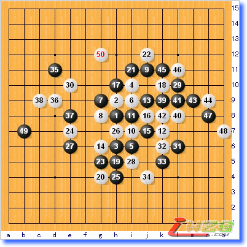

本文由掌棋盟版主无伤所写
鼠年伊始，掌棋盟推出了新年棋战第一弹，棋情VS牛奶八番棋对决。说到棋情和牛奶，相信大家都很熟悉。牛奶成名已久，是有名的不败常青树。棋情在这几年更是风光无限，隐隐有网络五子第一人的霸气。他们的对决于广大爱好者的吸引力是相当大的。比赛于大年初二晚八时开战，最终三胜三负二平，双方握手言和。下面我就本次比赛棋局略作简评。限于水平，错漏之处难免，请大家不吝批评指正。
棋情（黑）牛奶（白）第一局 瑞星

瑞星开局，到12手流行定式。13手选择较多，最常见的有J9，G6和本局选择的H10，白14强防，黑15流行的走法是应以J6或I11也是一盘棋。实战活三的走法是棋情的趣向，以求打破常规。16下面挡住断掉黑方联系，在本方冥三附近行棋还有积蓄力量的意思。17活三，18挡住。然后黑19是有意思的选择，这里第一感是走K9按住白头。这样的话，黑上，下各有潜力，属于黑可战局面。实战的19应该是对局时候的趣向，揣测黑的意图是希望白在右边马上动手，通过交换局限白于一隅。然后寄望于中后盘。面对这个变招，白20机敏。既和黑的意图针峰相对，又暗含杀机。黑21，这步是本局最大的问题手，黑对于白棋左边的威胁估计明显不足，以下白冲四跳三胜定。本局黑方行棋较毛燥，白方顺势而动，不动声色的取得了胜利。
共24手白棋胜。
牛奶（黑）棋情（白）第二局 瑞星

还是瑞星，13选择了J9，白14是它的流行正应，15活三，16反活三都是定式性的走法，然后黑17挡两头都成立，除了实战这种应法，还可以下挡，下挡的变化始见于棋痴，曾经流行一时，成绩很好。不过随着大家对它的重视程度提高，研究深入，白棋的反击手法也越来越多，越来越强。实战的选择，实际上更加古老，流行于下挡之前，或者是打算避开彼此最熟悉的局面。18正着，19很难选择，这里可以考虑的点很多，如L6，H5，I5等等，实战活三也是一个办法，活三考虑的是快速定型，白挡在左边，这是强硬的态度，要求黑跟着防，21防守的同时尽量给白以威胁，白22整形，24顺势拦住活二， 25，27是唯一防，这两步之后白的空间不足，肯定不能杀出。但白仍然在28做一手，这里的用意不是进攻，而是利用局部优势先手消除黑棋的味道。已经是为和棋做打算，29到35双方交换，白方如愿拿到先手，36防在黑棋联系的要点上心情可谓舒畅。黑37做棋有些无奈，不过盘面确实也没有别的东西能一争胜负，38以下白故技重施，利用局部优势以攻为守，先手化解掉了黑最后的味道，到62盘面再无争胜空间，双方和棋。本局白方20以下深得控制精髓，而反观黑棋也没有大的失误，和棋应是情理之中
共62手双方和棋
棋情（黑）牛奶（白）第三局 瑞星

在番棋里，往往反复出现同样的局面。这固然是对局双方互不服输的表现，也可看作是双方视实战为研究的求道精神。到16手，与第一局一模一样，17变招，换了一个手法。18局部最强，19封盖一眼看去很自然，类似于黑15在17位盖，白16应以18，然后黑17盖在19位的变化。比之那个变化，黑抢了个活三之后联系好象还更多。其实不然，白20好棋，这手棋体现了牛奶的实力，准确的抓住了黑的形状缺陷。这里的问题是，白不能挡这个跳活三的中间了，因为先走了个活三在上面，现在挡中间，白简单抓禁。22，23都是必然，24，26！！妙手，于无声处听惊雷。从20到26可以说是局部攻杀经典之作。以下支撑到33手，黑看看无防，投子认负。本局是牛奶的好局。抓住对手微小的破绽妙手取胜，这样的胜局是每个下棋之人都梦寐以求的。
共33手白棋胜
牛奶（黑）棋情（白）第四局 瑞星

牛奶执黑先行，到13手和第二局一样，14鬼手，咋一看脱离了主战场，有些不务正业。细细分析，也不那么好对付，黑如果经营上边，白在下面有强烈的牵制。15以稳为主攻守兼备，16破坏黑棋形，18占住右边要点，19黑面临选择。目前的局面黑似乎有优势，却又很难把握，如何进攻需三思而后行。19，21两个活三，23防守兼做棋，似乎不坏。但白24是好手，最大限度发挥了子效，以下黑着手较为头疼。25，27黑做棋同时防住白下边这块走得相当强硬，白28一手防干净，黑29在左边占住白进攻要点，这是寻求和棋的姿态。白30看似漫不经心的在左上做了一手棋，黑31是有便宜先占，盖掉右边的冥三还有先手的味道，32跟过来防，33之后34再防。先手交换掉右边，黑回头在35防住白的跳冥三应是本局败招，看似符合棋理的一手